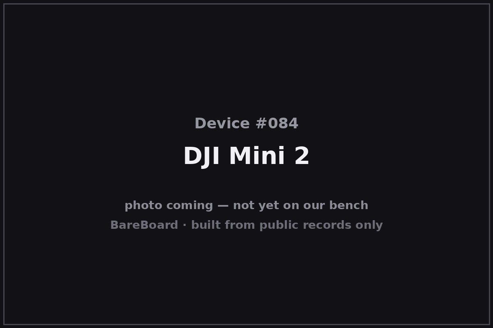

The Autopsy Report · Device #084
DJI Mini 2
The Mini 2 is the drone that proved small could be serious: under 249 grams — light enough to dodge registration in many countries — with 4K video, a 10 km link, and half an hour of flight. It's the great-grandchild of the Mavic Pro from the previous report, and the best-documented drone in this batch.
What is this thing?
The DJI Mini 2 is an ultralight folding quadcopter, model MT2PD, weighing under 249 grams. It shoots 4K/30 video at up to 100 Mbps, takes 12-megapixel RAW stills, and flies for a claimed 31 minutes. DroneXL
The sub-249 g weight isn't an accident — it's the threshold under which many aviation authorities (including the U.S. FAA for recreational flight) don't require registration, and the Mini 2 was engineered to sit just under it. Android Police
Whose box is this?
This one isn't on our bench — yet. Nothing here comes from a BareBoard teardown: no disassembly, no boot logs, no bench measurements, no firmware in our hands. Everything below is built from public records — the government's FCC filing, the manufacturer's own documents, and contemporary press — read carefully and cited line by line. That's the deal with these reports: when a fact can't be verified from a public record, we say so, out loud.
The moment this hardware crosses our bench, this report gets a second act: our own photos, our own measurements, and anything the public record got wrong gets corrected.
A short history
DJI released the Mini 2 on November 4, 2020, exactly one year after the original Mavic Mini. DroneXL The upgrades that mattered: 4K replaced 2.7K video, the flaky Wi-Fi control link was replaced with DJI's far more robust OcuSync 2.0 (10 km range), and flight time ticked up to 31 minutes. Android Police It sold for $449 at launch — $50 more than its predecessor.
One caution for fellow researchers: the model number MT2PD was later reused on the DJI Mini 4K (2024), a different product. DJI Mini — Wikipedia When you look up this FCC filing, make sure you're reading about the 2020 drone.
The outside

The Mini 2 keeps the Mavic folding geometry — four arms hinging flat against the body — shrunk to a footprint not much bigger than a phone. Android Police The nose holds the 3-axis gimbal camera; the belly carries the downward vision sensors that give it stable hovering without GPS.
Reading the plastic
Mold marks, date wheels, material codes — the shell's birth certificate. This is bench-only evidence: without the physical unit in our hands, there's nothing honest to read here. What the enclosure looks like is described above from public photos; what's molded into it awaits the bench.
The board
This is the best-documented board in the batch. The public FCC filing includes internal photographs (FCC exhibit document 4941194), and an independent analysis of those photos walks through the board stack in detail. LookSei
The confirmed headline from that analysis: flight control runs on an STM32F4-series microcontroller — STMicroelectronics' Cortex-M4 workhorse, a chip so common in drones it's practically the industry's default nervous system. LookSei Beyond that one well-supported identification, other component guesses circulating online are speculative and excluded from this report on purpose: one verified chip beats five guessed ones.
Under the microscope: the chips
- STM32F4xx (STMicroelectronics) — flight-control microcontroller, identified in the independent FCC-photo analysis. LookSei
- Everything else on the stack — the video pipeline, the OcuSync radio chain, the vision sensors — is unverified at the component level from public photos alone. Deliberately not listed.
The government's file on this box
The FCC equipment authorization is FCC ID SS3-MT2PD2007, model MT2PD, grantee SZ DJI TECHNOLOGY CO., LTD. fccid.io filing The internal photographs in the filing (document 4941194) are the primary source for everything above about the hardware.
Listening in
We have no boot log for this device — no unit on the bench means nothing to listen to. But the posture is worth stating up front, because it governs everything BareBoard ever does with a live device.
We listen, we don't knock. A serial console is a place to watch a device narrate its own startup, not a place to log in, change things, or break past anything the manufacturer locked. On our bench we attach read-only: power and ground, one receive wire, and silence on the transmit line. We never use JTAG or SWD debug headers to take control, never extract or modify firmware, never hunt for credentials, and never publish anything that would let someone else bypass a lock or defeat authentication.
When this device arrives, the first question will be: where does it talk, and does it talk to us unprompted? Until then, that question stays open.
What we found
- The Mini 2 (model MT2PD) launched November 4, 2020: 4K/30, OcuSync 2.0, 31-minute flight, under 249 g.
- Public FCC internal photos confirm the board stack; independent analysis identifies an STM32F4-series flight-control MCU.
- The MT2PD model number was later reused on the 2024 Mini 4K — don't cross the filings.
What we didn't do
- We never opened a unit, attached to a debug port, or powered one up for this report.
- We never extracted, modified, or shared any firmware or software.
- We never published or used any credentials, keys, or bypass techniques.
- No boot logs, no bench measurements, and no photos of our own — because there is no unit of ours to photograph. The device photo above is credited in its caption.
By the numbers
- Launch: November 4, 2020
- Model: MT2PD
- Weight: Under 249 g
- Camera: 12 MP, 4K/30 at 100 Mbps, RAW stills
- Flight time: 31 minutes (advertised)
- Link: OcuSync 2.0, 10 km
- FCC ID: SS3-MT2PD2007
- Bench status: Not yet on our bench
Words to know
- Sub-250 g
- Under the weight threshold that triggers drone registration in many countries — the Mini 2 was designed to sit just below it.
- OcuSync 2.0
- DJI's second-generation control-and-video link; far more robust than the Wi-Fi link on the original Mavic Mini.
- STM32F4
- STMicroelectronics' Cortex-M4 microcontroller family, a staple of flight controllers.
Sources & confidence
- DJI Mini 2 officially released — DroneXL, Nov 2020 link — Confirmed
- DJI announces the Mini 2 — Android Police, Nov 2020 link — Confirmed
- DJI Mini model-number lineage (MT2PD reused on Mini 4K, 2024) — Wikipedia link — Likely
- DJI Mini 2 teardown / FCC photo analysis (STM32F4xx flight MCU, doc 4941194) — LookSei link — Likely
- FCC filing SS3-MT2PD2007, grantee SZ DJI TECHNOLOGY CO., LTD. — fccid.io link — Confirmed
Legal note. BareBoard is an educational project. Everything on this page is derived from public records — our own bench work begins only when hardware arrives. We don't publish, host, or distribute firmware, keys, passwords, or credentials, and nothing here bypasses a lock, defeats authentication, or extracts software from a device. Product names and trademarks belong to their respective owners and appear here only to identify the hardware. If you believe anything here infringes your rights, contact us and we'll address it promptly.